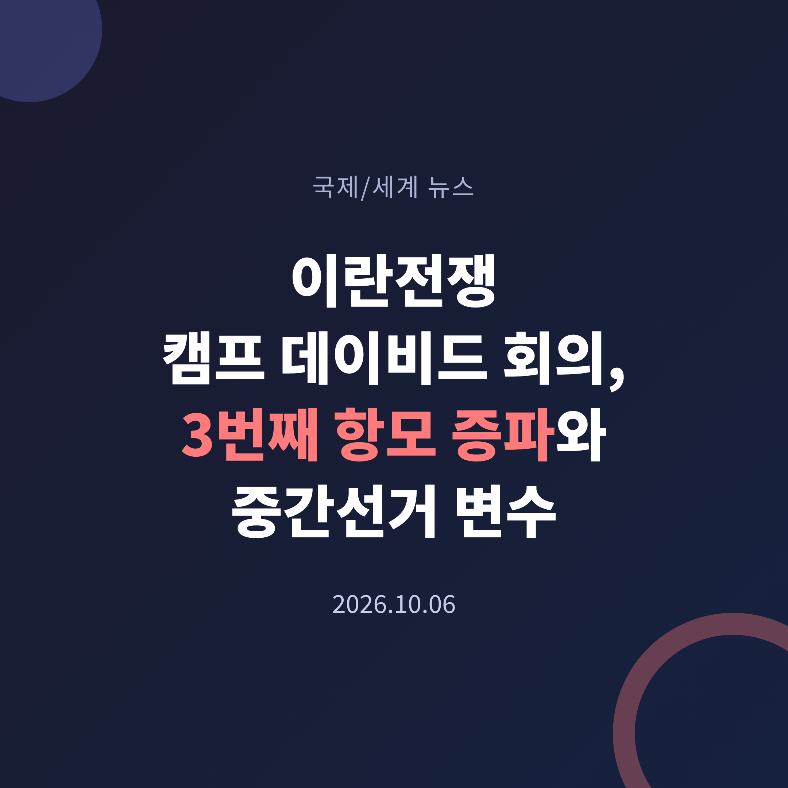
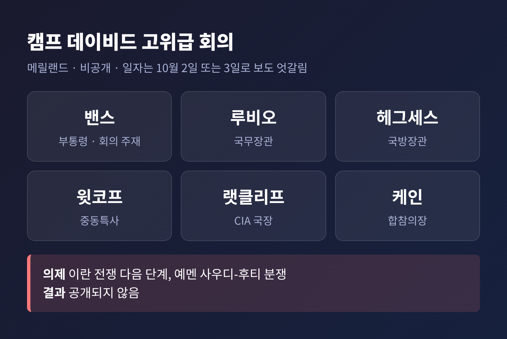
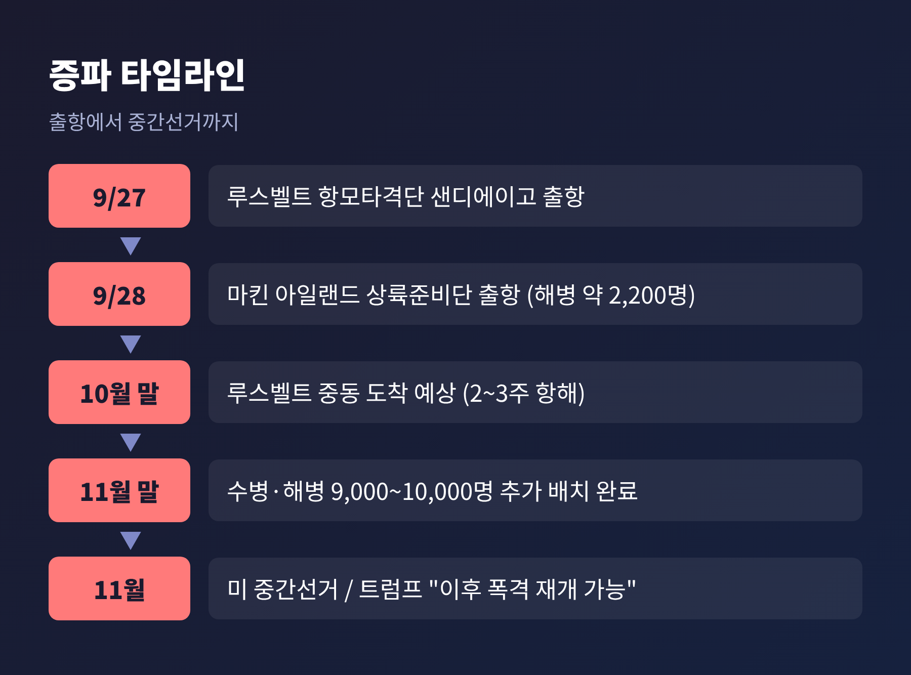
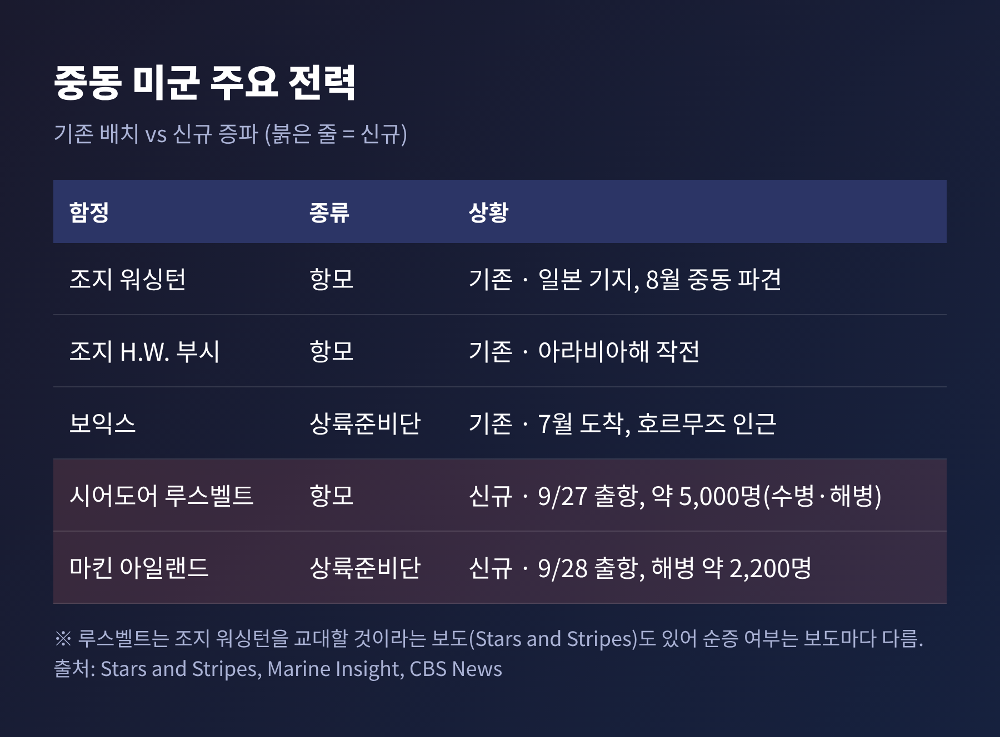
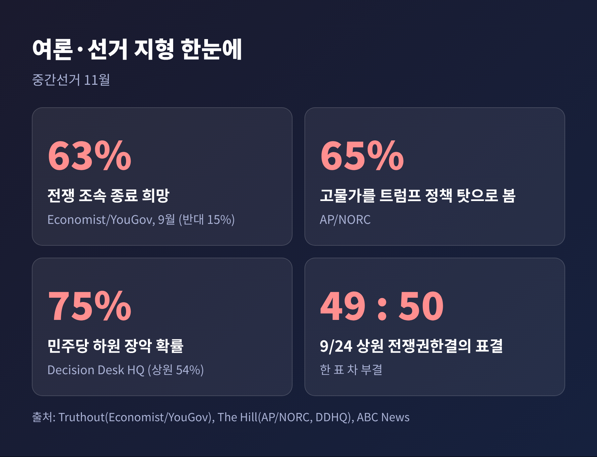
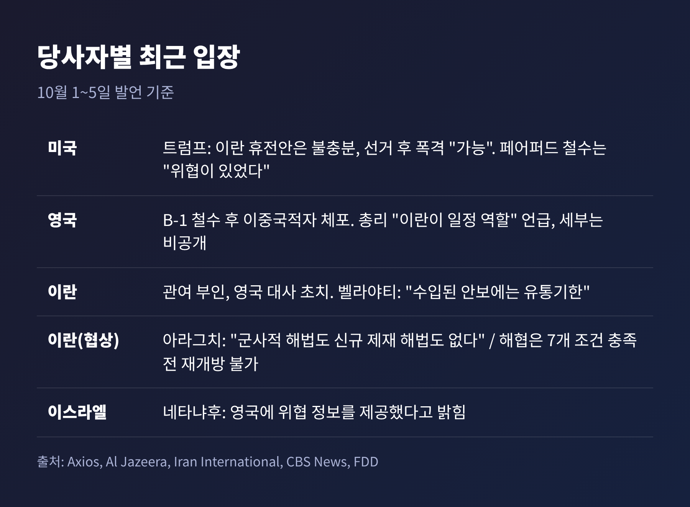

이번 글에서는 지난 주말 전후로 알려진 캠프 데이비드 고위급 회의와 미군 추가 증파를 정리해 보겠습니다.
핵심은 세 가지입니다. 트럼프 행정부가 항모와 해병대를 더 보내고 있고, 대통령이 중간선거 이후 폭격 재개 가능성을 열어 두었으며, 의회와 동맹국의 부담이 동시에 커지고 있다는 점입니다.
트럼프 대통령의 국가안보팀이 메릴랜드 캠프 데이비드에서 예고 없이 모였습니다. Axios가 10월 3일 처음 보도한 내용으로, 일자는 매체에 따라 2일(금)과 3일로 엇갈립니다. 이 글에서는 "지난 금요일 전후"로 적습니다.
회의는 JD 밴스 부통령이 주재했습니다. 마코 루비오 국무장관, 피트 헤그세스 국방장관, 스티브 윗코프 중동특사, 존 랫클리프 CIA 국장, 댄 케인 합참의장이 참석했다고 Gulf News와 CBS 뉴스는 전합니다. 의제는 이란 전쟁과 예멘의 사우디-후티 분쟁이었습니다.
결정 사항은 공개되지 않았습니다. 다음 단계를 묻는 질문에 트럼프 대통령은 "말하면 큰 뉴스가 될 것"이라고만 답했습니다.

회의 전후로 군사 움직임이 겹쳤다는 점이 눈에 띕니다. USS 시어도어 루스벨트 항모타격단이 9월 27일, USS 마킨 아일랜드 상륙준비단이 28일 샌디에이고를 떠났습니다. 해병 2,200명가량이 포함된 13원정대가 함께합니다. Stars and Stripes에 따르면 11월 말까지 수병과 해병 9,000~10,000명이 추가됩니다.
이 증파는 단순한 병력 보충으로만 보기 어렵습니다. 협상이 막힌 상태에서 군사 선택지를 넓히는 신호이기 때문입니다.
이란은 호르무즈 해협 재개방 등을 담은 이른바 7일 계획을 내놓았지만, 미국은 이를 거부했습니다. 카타르가 중재를 이어가고 있습니다. 아라그치 이란 외무장관은 10월 4일 "군사적 해법도, 신규 제재에 기댄 해법도 없다"고 말했습니다. 양측 모두 물러설 기미가 보이지 않습니다.
트럼프 대통령은 TIME 인터뷰에서 중간선거 이후 대규모 폭격을 재개할 수 있느냐는 질문에 "그렇게 할 것이다. 가능하다"고 답했습니다. 이란의 휴전안은 불충분하다고 했습니다. 선거 일정과 군사 일정이 맞물려 읽히는 이유입니다.

전쟁은 2월 28일 미국과 이스라엘의 공격으로 시작됐습니다. 개전 당시 Reuters는 4~5주 안팎의 작전을 예상하는 분위기였다고 분석했지만, 이제 8개월째로 접어들었습니다.
현재 중동에는 USS 조지 워싱턴과 조지 H.W. 부시 항모, 보익스 상륙준비단이 있습니다. 루스벨트가 도착하면 항모 3척 체제가 됩니다. 다만 Stars and Stripes는 루스벨트가 조지 워싱턴을 교대할 것으로 예상된다고 전해, 순증인지 교대인지는 보도마다 다릅니다. 마킨 아일랜드의 최종 목적지도 확인되지 않았습니다.
병력 규모도 집계 범위에 따라 다릅니다. CBS는 지역 내 미군을 약 20,000명으로 설명했고, ABC는 9월 24일 기준 전체 전개 병력을 약 50,000명, 사망 18명, 부상 800명 이상이라고 전했습니다. 헤그세스 장관은 3일 "봉쇄는 철통같고 전쟁 전 수준에 가깝게 가동되고 있다"고 주장했습니다.

의회는 아직 제동을 걸지 못했습니다. 9월 24일 상원은 이란 전쟁권한결의안을 49 대 50으로 부결시켰습니다. 한 표 차입니다. 이란 관련 14번째 표결이었고, 통과된 것은 6월 한 차례뿐이었습니다.
공화당에서는 머카우스키, 콜린스, 랜드 폴, 틸리스 의원이 찬성했습니다. 틸리스 의원은 처음으로 찬성하면서 "의회에 더 알려야 하고, 전략 목표도 분명히 해야 한다"고 말했습니다. 허스테드, 설리번, 마셜 의원처럼 재선이 걸린 의원들은 유가 부담을 인정하면서도 반대표를 던졌습니다.
여론은 우호적이지 않습니다. 이코노미스트/유고브 조사(9월)에서 63%가 전쟁이 가능한 한 빨리 끝나야 한다고 답했고, 반대는 15%였습니다. AP/NORC 조사에서는 65%가 고물가를 트럼프 정책 탓으로 봤습니다. Decision Desk HQ는 민주당의 하원 장악 확률을 75%, 상원을 54%로 예측합니다.
트럼프 대통령의 생각은 다릅니다. 공화당이 의회를 잃을 수 있느냐는 질문에 "가능하다"면서도 "도움이 될 것"이라고 했습니다. 이란이 핵무기를 가져도 되느냐고 물으면 거의 모두 반대하니, 그렇게 질문하면 득이 된다는 논리입니다. 질문 방식에 따라 해가 될 수도 있다고 인정한 대목이기도 합니다.

전쟁의 파장은 이미 유럽까지 닿았습니다. 영국 RAF 페어퍼드 기지에 있던 B-1 폭격기 약 12대가 10월 4~5일 주말 미 본토로 돌아갔습니다. Axios는 이란의 드론 공격 위협 정보가 배경이라고 전했고, 네타냐후 이스라엘 총리는 이스라엘이 영국에 정보를 줬다고 밝혔습니다.
설명은 엇갈렸습니다. 루비오 장관은 처음 "정기 순환"이라고 했지만, 트럼프 대통령은 "우연히 나간 것이 아니다. 위협이 있었다"고 바로잡았습니다.
영국 당국은 9월 27일 5명을 체포했다가 다음 날 무혐의로 풀어 줬습니다. 이후 런던에서 25세 영국-이란 이중국적자를 체포했습니다. Al Jazeera에 따르면 영국 총리는 "이란이 일정 역할을 했다"고 말했고, 이란은 관여를 부인하며 영국 대사를 초치했습니다. 영국은 3월부터 "방어적" 목적의 기지 사용을 허용해 왔습니다.
이란 측 입장도 강경합니다. 벨라야티 최고지도자 고문은 "수입된 안보에는 유통기한이 있다"고 말했습니다. 칼리바프 의회 의장은 7개 조건이 충족되기 전에는 해협을 열지 않겠다는 입장이라고 FDD는 전합니다. 한편 이란 국가안보보좌관은 경제 악화로 "역사상 가장 어려운 시기 중 하나"를 맞고 있다고 인정했습니다.

정리하면 이렇습니다. 지켜볼 지점은 셋입니다.
첫째, 10월 말 루스벨트 항모타격단의 도착 시점입니다. 아라비아해까지 2~3주가 걸린다고 Al-Monitor는 전합니다. 전력이 갖춰지는 시기와 선거일이 가까워질수록 군사 옵션의 무게도 달라질 수 있습니다.
둘째, 의회의 움직임입니다. 한 표 차 부결은 선거를 앞둔 공화당 의원들의 계산이 바뀔 여지를 남깁니다. 다만 현재까지는 행정부 설득에 입장을 되돌린 의원도 있었습니다.
셋째, 협상 채널입니다. 카타르 중재가 이어지지만, 미국은 이란의 제안을 거부했고 이란은 7개 조건을 고수합니다. 양측 입장이 이만큼 벌어진 상태에서는 선거 전에 돌파구가 나오기 쉽지 않아 보입니다. 이는 보도를 종합한 제 판단이며, 상황은 빠르게 바뀔 수 있습니다.
끝으로 한 마디만 덧붙이겠습니다. 전쟁의 시간표와 선거의 시간표가 겹칠 때, 군사적 결정은 정치적 계산과 따로 읽기 어렵습니다. 결국 남는 질문은 하나입니다. "선거 이후"라는 말이 협상의 여유인지, 확전의 예고인지는 아직 아무도 확답하지 못합니다.
출처: CBS News, FDD, Democracy Now, Gulf News, National Security Journal, Iran International, Salon, The Hill, Stars and Stripes, Marine Insight, Al-Monitor, ABC News, Al Jazeera, Axios, Truthout 등 (2026-09-24~10-05 보도). 인용은 영문 원문을 요약·번역한 것입니다.